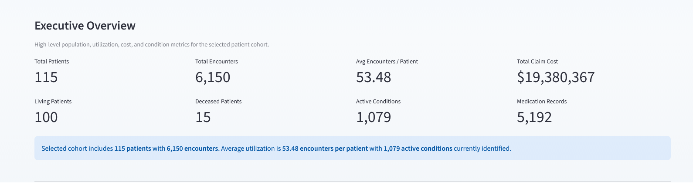

⭐ Featured Project
Live Dashboard
Case Study
Patient Outcomes Product Analytics Dashboard

Built an interactive healthcare analytics dashboard using Synthea synthetic patient data to explore patient cohorts, utilization, conditions, medications, claim cost trends, and readmission proxy logic.
- Defined KPI logic for utilization, readmission proxy, active conditions, and claim cost.
- Built stakeholder-facing dashboard pages for executive overview, risk, treatment patterns, and data exploration.
- Documented metric definitions, SQL analysis, and QA workflow.